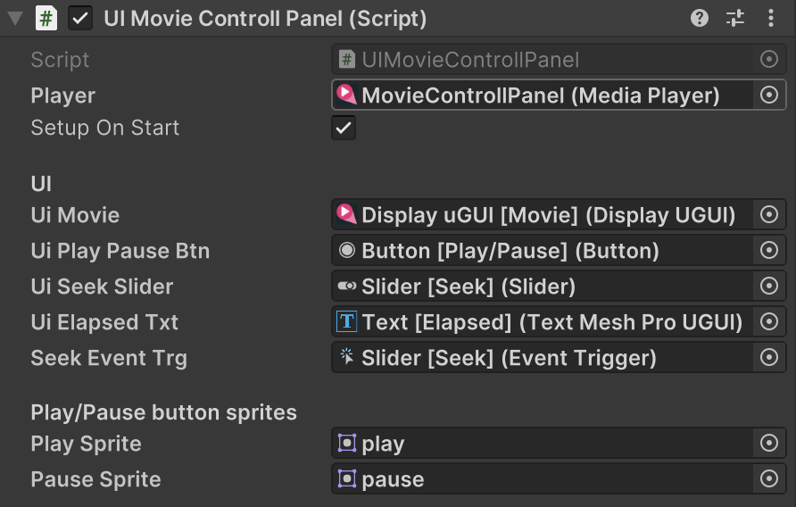

UIMovieControllPanel
AVProVideo を利用してムービー再生用のコントロールパネル機能を提供します。
Important
AVProVideo パッケージが必要です。利用の際はソースコード内の #define 定義を有効にしてください。
Important
パッケージ内の設定済みプレハブから利用できます。プレハブ内に DisplayUGUI と TMP_Text のコンポーネントを追加し、各参照を再設定して利用してください。
namespace GarageKit
public class UIMovieControllPanel : MonoBehaviour
Inheritance
ARTrackedImageMarkerManager -> MonoBehaviour
Inspector
Properties
| member | type | description |
|---|---|---|
| player | MediaPlayer | MediaPlayer の参照 |
| setupOnStart | bool | Start() でセットアップを行う |
| uiMovie | DisplayUGUI | 表示用 DisplayUGUI の参照 |
| uiPlayPauseBtn | Button | 再生 / 一時停止ボタンの参照 |
| uiSeekSlider | Slider | シーク用 Slider の参照 |
| uiElapsedTxt | TMP_Text | 残り時間表示 TMP_Text の参照 |
| seekEventTrg | EventTrigger | シークイベント用 EventTrigger の参照 |
| playSprite | Sprite | 再生ボタン Sprite |
| pauseSprite | Sprite | 一時停止ボタン Sprite |
Methods
再生開始時コールバック
public Action OnPlay
再生一時停止時コールバック
public Action OnPause
シーク開始時コールバック
public Action<float> OnSeekStart
シーク中コールバック
public Action<float> OnSeek
シーク終了時コールバック
public Action<float> OnSeekEnd
再生完了時コールバック
public Action OnFinishedPlaying
映像のクリア
public void Clear()
映像のセットアップ
public void Setup()
映像の読み込み
public bool Load(string moviePathOrUrl, MediaPathType pathType = MediaPathType.AbsolutePathOrURL, bool autoPlay = false)
Example
- __ProjectName__/Prefabs/Utils/UI/MovieControllPanel.prefab
// 読み込み再生前にセットアップが必要
uiMovieControllPanel.Setup();
uiMovieControllPanel.Load("test.mp4");